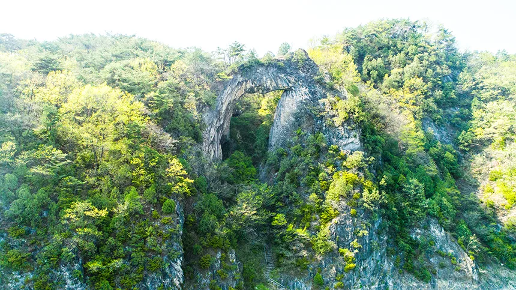
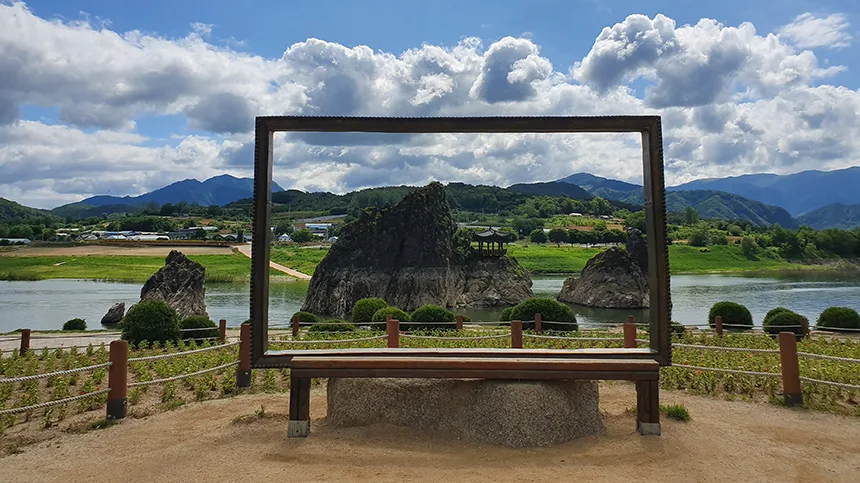
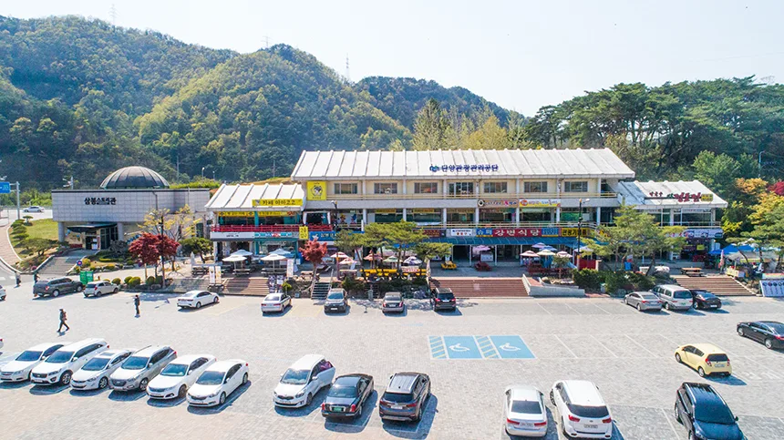
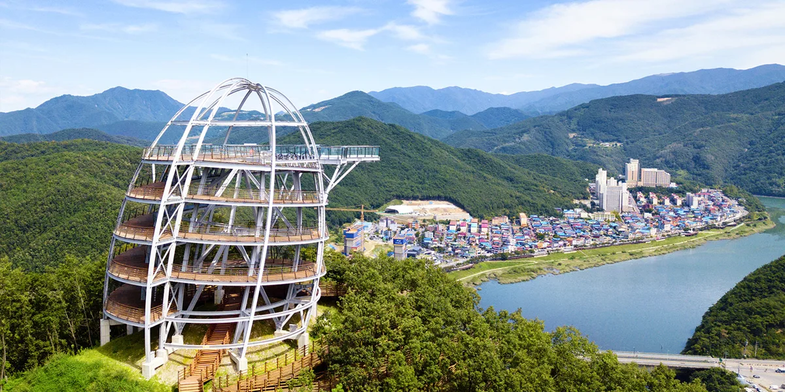
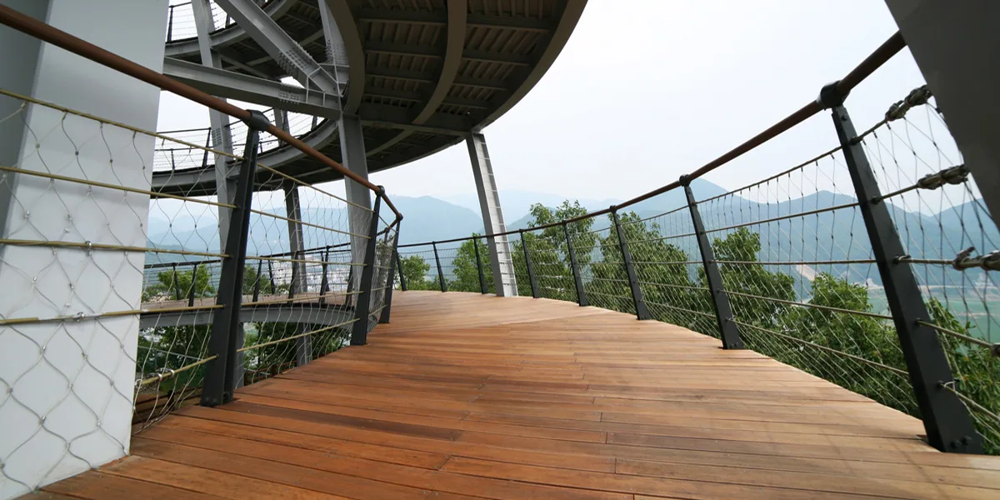
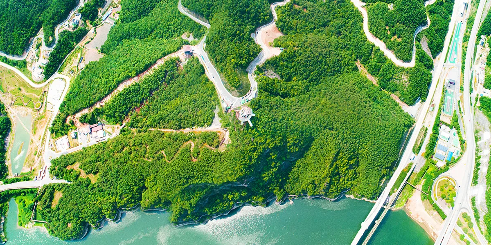
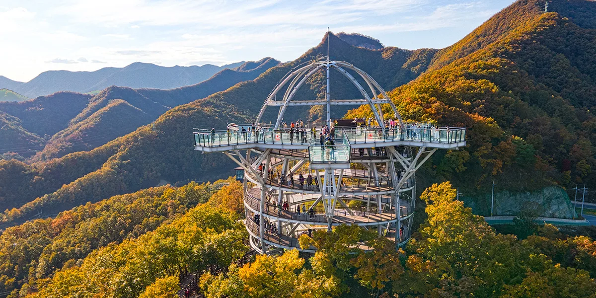

▲ 도담삼봉. 정도전이 어린 시절을 보내고 호를 '삼봉'으로 지은 곳이다. 입장은 무료지만 주차는 유료다 ⓒ 단양관광공사
1. 왜 이 순서인가 — 남한강을 따라가는 동선
도담삼봉과 만천하스카이워크는 둘 다 남한강을 끼고 있습니다. 도담삼봉은 매포읍, 만천하스카이워크는 적성면에 있고, 두 곳 모두 강을 따라 나 있는 길로 이어집니다.
추천 순서는 도담삼봉·석문을 먼저 보고 만천하스카이워크로 넘어가는 쪽입니다. 도담삼봉 유원지 안에 있는 석문(자연 석회암 아치)까지 함께 보고 나면, 강을 따라 만천하스카이워크로 이동하는 동선이 자연스럽게 이어집니다. 거꾸로 하면 오전에 스카이워크 매표소부터 줄을 서게 됩니다.

▲ 도담삼봉에서 걸어서 갈 수 있는 석문. 자연 석회암이 만든 아치형 구조다 ⓒ 단양관광공사
2. 도담삼봉 — 입장은 무료, 주차는 유료
도담삼봉 입장료는 없습니다. 운영 시간은 오전 9시부터 오후 6시까지입니다.
다만 주차비 3,000원(승용·승합 기준)이 따로 붙습니다. 입장이 무료라는 말만 보고 갔다가 주차장에서 요금을 내는 순간 당황하는 경우가 나옵니다.
도담삼봉의 중심은 남한강 위에 솟은 세 봉우리입니다. 가장 크고 높은 가운데 봉우리가 장군봉, 북쪽이 처봉, 남쪽이 첩봉입니다. 조선 개국공신 정도전이 어린 시절을 이곳에서 보냈고, 이 풍경에 반해 자신의 호를 '삼봉'으로 지었다는 이야기가 전해집니다. 2008년 명승 제44호로 지정됐고, 2025년에는 단양 지질공원의 일부로 유네스코 세계지질공원에 이름을 올렸습니다.

▲ 강변 포토프레임 너머로 보이는 도담삼봉. 장군봉·처봉·첩봉 세 봉우리가 한눈에 들어온다 ⓒ 단양관광공사

▲ 도담삼봉 주차장. 규모는 넉넉하지만 유료라는 점을 잊고 오는 방문객이 적지 않다 ⓒ 단양관광공사
선착장에서 모터보트나 황포돛배를 탈 수도 있습니다. 보트를 타면 석문 바로 아래까지 접근해 아치 구조를 물 위에서 올려다볼 수 있습니다. 시간 여유가 있다면 도보로 석문까지 다녀오는 편이 무료입니다.
3. 만천하스카이워크 요금 — 전망대보다 액티비티가 훨씬 비싸다
스카이워크 전망대 자체 요금은 성인(19~65세) 4,000원입니다. 청소년·어린이·경로는 3,000원, 미취학 아동은 무료입니다.
같은 부지 안 액티비티는 전망대보다 훨씬 비쌉니다. 짚와이어는 30,000원(단체 24,000원), 알파인코스터는 18,000원(단체 15,000원, 2023년 10월 개정)입니다. 전망대만 보고 나올 생각이라면 4,000원으로 충분하지만, 액티비티까지 탈 계획이라면 예산을 따로 잡아야 합니다.

▲ 만천하스카이워크. 말굽 모양 만학천봉 전망대에서 세 갈래 길이 뻗어 있다 ⓒ 단양관광공사
구조 자체도 규모가 있습니다. 남한강 수면에서 80~90m 위, 25m 높이로 세워졌고 삼중 강화유리로 만든 길이 15m·폭 2m 통로가 강 쪽으로 뻗어 있습니다. 발밑으로 남한강이 그대로 내려다보이고, 맑은 날에는 소백산 연화봉·비로봉까지 시야에 들어옵니다.

▲ 강화유리 통로. 발밑 약 100m 아래로 남한강이 흐른다 ⓒ 단양관광공사
4. 전망대까지 올라가는 방법 — 모노레일과 도보
매표소에서 전망대까지는 걸어 오르거나 모노레일을 탈 수 있습니다. 모노레일은 길이 400m로, 자연 경사를 따라 단양강 풍경을 보며 편하게 정상 입구까지 데려다줍니다.
| 구분 | 편도 요금 | 비고 |
|---|---|---|
| 대인 · 소인 · 청소년 · 경로 | 3,000원 | 구분 없이 동일 |
| 단체(20인 이상) | 2,500원 | 1인당 |
| 만 6세 미만 | 무료 | - |
왕복으로 타면 6,000원, 전망대 입장료 4,000원보다 더 나갑니다. 체력에 자신이 있다면 도보 구간을 절반만 이용하는 것도 방법입니다. 짚와이어는 만학천봉과 환승장을 잇는 1코스(해발 약 120m 출발), 환승장에서 주차장까지 내려오는 2코스로 나뉘어 있어, 올라갈 때 모노레일을 타고 내려올 때 짚와이어로 이어 붙이는 동선도 가능합니다.

▲ 전망대로 오르는 모노레일 궤도. 산 능선을 따라 400m가 이어진다 ⓒ 단양관광공사
5. 주차장은 6곳, 매표소 앞은 두 곳뿐
만천하스카이워크 주차장은 6곳이고 전부 무료입니다. 문제는 매표소와 가까운 제1·2주차장뿐이라는 점입니다.
주말이나 성수기에는 1·2주차장이 먼저 찹니다. 이후 도착한 차량은 제3~6주차장에 세우고, 수시로 운행하는 무료 셔틀버스로 매표소까지 이동해야 합니다. 스카이워크 전망대 자체도 매표소에서 셔틀버스로만 접근할 수 있어, 셔틀을 두 번 타야 하는 동선이 나올 수 있습니다.

▲ 단풍철 만천하스카이워크. 주차장이 붐비는 시기와 단풍 절정기가 겹치는 만큼 오전 일찍 도착하는 편이 유리하다 ⓒ 단양관광공사
6. 날씨가 요금을 결정한다
강우·강설·낙뢰 등 기상 악화 시에는 모노레일과 스카이워크 모두 운행이 중단됩니다. 이 경우 전액 환불됩니다.
안개도 변수입니다. 시야 확보가 어려우면 전망 자체가 의미 없어지기 때문에 관람에 제한이 걸릴 수 있습니다. 단양은 강을 낀 분지 지형이라 이른 아침 안개가 잦은 편이니, 출발 전 날씨를 확인하는 편이 낫습니다.
7. 자차 여행자를 위한 정리
첫째, 도담삼봉은 입장이 무료여도 주차비 3,000원은 별도입니다. 현금이나 카드를 준비해 두십시오.
둘째, 짚와이어·알파인코스터는 전망대보다 훨씬 비쌉니다. 짚와이어 30,000원, 알파인코스터 18,000원으로 전망대 4,000원의 몇 배입니다. 예산을 미리 계산해 두십시오.
셋째, 모노레일 왕복은 전망대 입장료보다 비쌉니다. 편도만 타고 한쪽은 걸어 내려오는 선택지도 고려할 만합니다.
넷째, 성수기에는 1·2주차장부터 채워집니다. 늦게 도착할수록 셔틀버스를 타는 구간이 길어집니다.
정리하면 이렇습니다. 두 곳 모두 큰 틀에서는 저렴한 여행지지만, 요금이 새는 지점은 입장료가 아니라 주차와 이동 수단입니다. 그 지점만 먼저 계산해 두면 하루 코스가 한결 가벼워집니다.